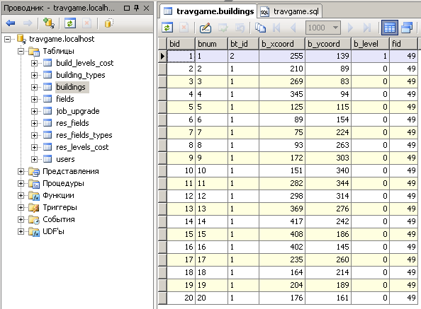
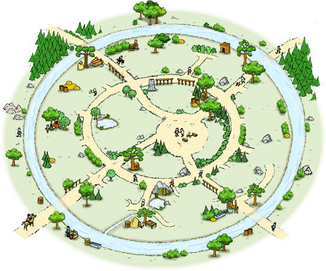
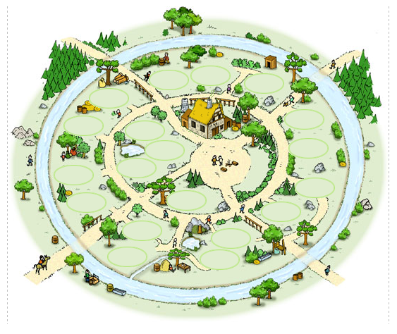
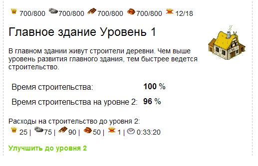
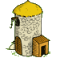
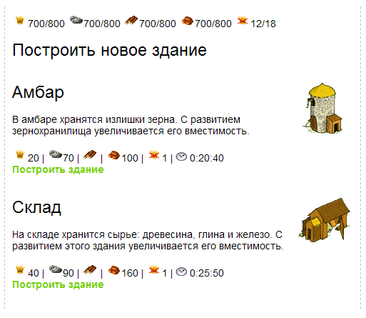
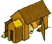
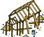
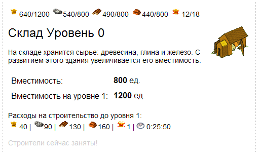
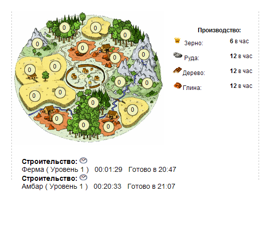

| |
Поселок ч.1. Ресурсные постройки
5.1.
Таблицы построек поселка
Здравствуйте! Сегодня мы продолжим
курс занятий по созданию стратегической браузерной игры и начнем
потихоньку застраивать наш поселок необходимыми для его
функционирования зданиями. Целью нашей сегодняшней совместной работы
будет постройка и улучшение зданий, связанных с хранением добываемых
ресурсов. Так, для хранения зерна нам понадобится возвести амбар, а
для хранения остальных ресурсов (древесина, руда и глина), мы
построим склад. Апгрейд этих двух зданий будут приводить к
увеличению их вместимости. То есть, чем выше уровень (левел) здания,
тем больше ресурсов оно может хранить. А сейчас давайте создадим
справочную таблицу в нашей с Вами базе
travgame, которая будет описывать разные типы зданий. Вот
эта таблица и назовем мы ее building_types.
/* Справочник зданий поселка */
CREATE TABLE `building_types` (
bt_id bigint(20) unsigned NOT NULL auto_increment, /*ID*/
bt_name char(50), /*название постройки*/
bt_image char(50), /*картинка готового здания*/
bt_image_not_ready char(50), /*картинка строящегося здания*/
bt_description char(255), /*описание постройки*/
bt_ycoord_dif int, /*коррекция по Y размещения строения*/
bt_template char(20), /*шаблон здания*/
PRIMARY KEY (`bt_id`)
) ENGINE=MyISAM DEFAULT CHARSET=cp1251;
Фрагмент 5.1.1
bt_id - идентификатор типа здания
bt_name - название здания ( например: конюшня )
bt_image - картинка построенного здания
bt_image_not_ready - картинка строящегося здания
bt_description - описание назначения этого здания
bt_ycoord_dif - это смещение по Y
для размещения здания на карте поселка (разные здания - разные
размеры картинок)
bt_template - шаблон (php-файл)
который описывает присущую только этому зданию функциональность.
Давайте добавим немного данных в эту таблицу:
insert into building_types (bt_id,bt_name,bt_image,bt_image_not_ready,bt_description,bt_ycoord_dif,bt_template)
values (1,'Стройплощадка','img/vill/iso.gif','img/vill/iso.gif','',0,'tpl_iso.php');
insert into building_types (bt_id,bt_name,bt_image,bt_image_not_ready,bt_description,bt_ycoord_dif,bt_template)
values (2,'Главное здание','img/vill/g15.gif','img/vill/g15b.gif','В главном здании живут строители деревни...',20,'tpl_g15.php');
insert into building_types (bt_id,bt_name,bt_image,bt_image_not_ready,bt_description,bt_ycoord_dif,bt_template)
values (3,'Амбар','img/vill/g11.gif','img/vill/g11b.gif','В амбаре хранятся излишки зерна...',35,'tpl_g11.php');
insert into building_types (bt_id,bt_name,bt_image,bt_image_not_ready,bt_description,bt_ycoord_dif,bt_template)
values (4,'Склад','img/vill/g10.gif','img/vill/g10b.gif','На складе хранится сырье: древесина, глина и железо...',22,'tpl_g10.php');
Фрагмент 5.1.2Тут все ясно, единственное, Вы наверно заметили в поле
bt_template для разных типов зданий указаны какие-то файлы (tpl_iso.php,
tpl_g15.php ....). Это как раз и есть шаблоны. Для разных зданий
характерны какие-то общие данные, но есть и присущие каждому зданию
индивидуальные - вот они то и будут описаны в этих шаблонах. Это мы
рассмотрим чуть позже.
Итак, это был справочник, а теперь нам нужно где-то хранить все
здания, которые будут строить отдельные игроки в своих поселках. Нам
понадобится таблица с именем - buildings.
/* таблица зданий/стройплощадок поселка игрока */
CREATE TABLE `buildings` (
bid bigint(20) unsigned NOT NULL auto_increment, /*ID*/
bnum char(50), /*номер размещения постройки*/
bt_id char(50), /*связь с building_types (тип здания)*/
b_xcoord int,
b_ycoord int,
b_level int default 0, /* уровень здания */
fid int default 0, /*связан с принадлежащим игроку полем общей карты*/
PRIMARY KEY (`bid`)
) ENGINE=MyISAM DEFAULT CHARSET=cp1251;
Фрагмент 5.1.3
bid - уникальный идентификатор каждого построенного здания
(или стройплощадки)
bnum - номер этого здания
bt_id - поле связывающее здание с его типом из таблицы
building_types
b_xcoord - координата по X
размещения здания (стройплощадки) на карте поселка
b_ycoord - координата по У
размещения здания (стройплощадки) на карте поселка
b_level - уровень здания
fid - поле связывающее здание с поселком, которому оно
принадлежит.
Давайте придумаем следующее - когда игрок регистрируется в игре, ему
нужно сразу сформировать поселок со строительными площадками, на
которых он сможет возводить необходимые ему здания. Для этого
предлагается сделать процедуру по генерации стройплощадок для
поселка. По сути, эта процедура должна будет вносить данные в
таблицу buildings для указанного поселка.
Вот как выглядит эта процедура:/*------- процедура по генерированию стройплощадок ----------*/
create procedure makebuildplaces (p_fid int)
BEGIN
/*сразу вставляем главное здание*/
insert into `buildings` (bnum,bt_id,b_xcoord,b_ycoord,b_level,fid) VALUES (1,2,255,139,1,p_fid);
/*и еще 19 стройплощадок*/
insert into `buildings` (bnum,bt_id,b_xcoord,b_ycoord,b_level,fid) VALUES (2,1,210,89,0,p_fid);
insert into `buildings` (bnum,bt_id,b_xcoord,b_ycoord,b_level,fid) VALUES (3,1,269,83,0,p_fid);
insert into `buildings` (bnum,bt_id,b_xcoord,b_ycoord,b_level,fid) VALUES (4,1,345,94,0,p_fid);
insert into `buildings` (bnum,bt_id,b_xcoord,b_ycoord,b_level,fid) VALUES (5,1,125,115,0,p_fid);
insert into `buildings` (bnum,bt_id,b_xcoord,b_ycoord,b_level,fid) VALUES (6,1,89,154,0,p_fid);
insert into `buildings` (bnum,bt_id,b_xcoord,b_ycoord,b_level,fid) VALUES (7,1,75,224,0,p_fid);
insert into `buildings` (bnum,bt_id,b_xcoord,b_ycoord,b_level,fid) VALUES (8,1,93,263,0,p_fid);
insert into `buildings` (bnum,bt_id,b_xcoord,b_ycoord,b_level,fid) VALUES (9,1,172,303,0,p_fid);
insert into `buildings` (bnum,bt_id,b_xcoord,b_ycoord,b_level,fid) VALUES (10,1,151,340,0,p_fid);
insert into `buildings` (bnum,bt_id,b_xcoord,b_ycoord,b_level,fid) VALUES (11,1,282,344,0,p_fid);
insert into `buildings` (bnum,bt_id,b_xcoord,b_ycoord,b_level,fid) VALUES (12,1,298,314,0,p_fid);
insert into `buildings` (bnum,bt_id,b_xcoord,b_ycoord,b_level,fid) VALUES (13,1,369,276,0,p_fid);
insert into `buildings` (bnum,bt_id,b_xcoord,b_ycoord,b_level,fid) VALUES (14,1,417,242,0,p_fid);
insert into `buildings` (bnum,bt_id,b_xcoord,b_ycoord,b_level,fid) VALUES (15,1,408,186,0,p_fid);
insert into `buildings` (bnum,bt_id,b_xcoord,b_ycoord,b_level,fid) VALUES (16,1,402,145,0,p_fid);
insert into `buildings` (bnum,bt_id,b_xcoord,b_ycoord,b_level,fid) VALUES (17,1,235,260,0,p_fid);
insert into `buildings` (bnum,bt_id,b_xcoord,b_ycoord,b_level,fid) VALUES (18,1,164,214,0,p_fid);
insert into `buildings` (bnum,bt_id,b_xcoord,b_ycoord,b_level,fid) VALUES (19,1,204,189,0,p_fid);
insert into `buildings` (bnum,bt_id,b_xcoord,b_ycoord,b_level,fid) VALUES (20,1,176,161,0,p_fid);
END;
Фрагмент 5.1.3Как Вы видите из вышеприведенного фрагмента - в поселка
находится 20 мест под строительство зданий, а одно здание уже
построено - это Главное здание 1 уровня (b_level=1).
b_xcoord и b_ycoord мы прописываем по аналогии с
кружочками для вывода уровней ресурсных полей (помните предыдущее
занятие?) Ну и для каждого здания прописан идентификатор поселка
(поле fid), куда мы вставляем значение из аргумента,
переданного этой процедуре.
Как Вы уже наверно догадались, чтоб вызвать эту процедуру и создать
стройплощадки и главное здание для поселка игрока с именем test,
нужно сделать так: CALL makebuildplaces(49); /* для нашего игрока "test" */
Фрагмент 5.1.4
В результате таблица buildings заполнится данными, примерно
так:

Рисунок 5.1.1
Итак, Вы видите 19 записей с bt_id = 1 -
это стройплощадки и одна запись с bt_id = 2 -
это главное здание и b_level у него
равен 1 (здание сразу 1 уровня).
Давайте взглянем как выглядит карта поселка, на которой мы вскоре
разместим наши строительные объекты:

Рисунок 5.1.2
И сейчас настало время создать страничку с названием
village.php которая будет
отображать наш поселок. Для этого нам понадобятся еще картинки
зданий (пока что одна - главное здание) и картинка стройплощадки:
Теперь точно все готово для создания файла
village.php. Приведем фрагмент этого фала, который будет
визуализировать поселок и строения на нем:
<div class="resdiv" style="padding:0px 0px 0px 0px; position:absolute;left:220px;top:170px; z-index:0">
<img src="img/village.jpg">
<?
$res = mysql_query("SELECT b.bid, b.bnum, bt.bt_name,bt.bt_image, bt.bt_image_not_ready, bt.bt_description, bt.bt_ycoord_dif,
b.b_xcoord, b.b_ycoord, b.b_level
FROM buildings b
inner join building_types bt on bt.bt_id = b.bt_id
WHERE b.fid = $fid", $link )
or die("Query failed : " . mysql_error());
while ($row = mysql_fetch_array( $res )) {
$b_x = $row["b_xcoord"]-10; // небольшое смещение в Х координате
$b_y = $row["b_ycoord"];
$coord_dif = $row["bt_ycoord_dif"];
$bt_image = $row["bt_image"];
$bt_image_not_ready = $row["bt_image_not_ready"];
$bt_name = $row["bt_name"];
$b_level = $row["b_level"];
$bnum = $row["bnum"];
if ($b_level > 0 )
echo '<div class="bilding_pos" style="position:absolute;left:'.$b_x.'px;top:'.($b_y-$coord_dif).'px; z-index:0">
<img src="'.$bt_image.'" title="'.$bt_name.' уровень '.$b_level.'" onclick="go_build('.$bnum.')"></div>';
else
echo '<div class="bilding_pos" style="position:absolute;left:'.$b_x.'px;top:'.($b_y-$coord_dif).'px; z-index:0">
<img src="'.$bt_image_not_ready.'" title="'.$bt_name.' уровень '.$b_level.'" onclick="go_build('.$bnum.')"></div>';
}
?>
</div>
Фрагмент 5.1.5
В строках 1-2 вышеприведенного фрагмента мы создаем слой (<div>)
для хранения картинки карты поселка (village.jpg) и всех
объектов (стройплощадок и зданий). В запросе (строки 5-10) мы
объединяем две таблицы (buildings и building_types),
чтоб получить данные - картинки зданий и их названия, координаты их
размещения, уровни и т.д. В строках 21-23 мы проверяем, если уровень
здания равен единице - выводим картинку готового здания, если нулю -
строящегося (хотя для стройплощадок это не имеет разницы). Вы также
могли заметить, что при клике мышью на картинке здания сработает
событие и вызовет JavaScript функцию
go_build.
Но это уже тема для следующего пункта.
Вот как выглядит результат выполнения скрипта из фрагмента 5.1.5.

Рисунок 5.1.3
Вы видите, что по всему поселку разместились стройплощадки, а
главное здание уже построено. Давайте научимся в него заходить.
5.2.
Главное здание
Перед тем, как научиться входить в здание,
давайте сделаем еще одну таблицу в нашей базе. Она понадобится нам
для апгрейдов зданий. Название этой таблицы - build_levels_cost.
/*------------ справочник уровней, стоимости апгрейдов, потребления ресурсных полей ---------------*/
CREATE TABLE `build_levels_cost` (
blc_id bigint(20) unsigned NOT NULL auto_increment, /*ID*/
bt_id int, /*свзяь с building_types (тип здания)*/
blc_level int, /*уровень ресурсного поля*/
blc_grain int, /* сколько зерна для перехода на этот уровень */
blc_ore int, /* сколько руды для перехода на этот уровень */
blc_wood int, /* сколько леса для перехода на этот уровень */
blc_clay int, /* сколько глины для перехода на этот уровень */
blc_cons int, /* потребление */
blc_space INT, /* вместимость, для склада,амбара*/
blc_build_speed INT, /* скорость строительства (для гл. здания)*/
blc_time_upgrade CHAR(10), /* время апгрейда до след. уровня */
PRIMARY KEY (`blc_id`)
) ENGINE=MyISAM DEFAULT CHARSET=cp1251;
Фрагмент 5.2.1
Она чем-то напоминает таблицу затрат на апгрейды ресурсных полей -
res_levels_cost, но в ней есть и отличия. Например поля:
blc_space - вместимость для склада или амбара
blc_build_speed - скорость строительства (характерно для
главного здания)
Давайте заполним парочку уровней апгрейдов для трех зданий в этой
таблице:
/*--------------------------- первые 5 уровней развития некоторых зданий ----------------------*/
/*склад*/
insert into `build_levels_cost`(bt_id, blc_level, blc_wood, blc_clay, blc_ore, blc_grain, blc_cons, blc_space, blc_time_upgrade)
values (4,0,0,0,0,0,0,800,'0:00:00');
insert into `build_levels_cost`(bt_id, blc_level, blc_wood, blc_clay, blc_ore, blc_grain, blc_cons, blc_space, blc_time_upgrade)
values (4,1,130,160,90,40,1,1200,'0:25:50');
insert into `build_levels_cost`(bt_id, blc_level, blc_wood, blc_clay, blc_ore, blc_grain, blc_cons, blc_space, blc_time_upgrade)
values (4,2,165,205,115,50,1,1700,'0:33:50');
insert into `build_levels_cost`(bt_id, blc_level, blc_wood, blc_clay, blc_ore, blc_grain, blc_cons, blc_space, blc_time_upgrade)
values (4,3,215,260,145,65,2,2300,'0:43:00');
insert into `build_levels_cost`(bt_id, blc_level, blc_wood, blc_clay, blc_ore, blc_grain, blc_cons, blc_space, blc_time_upgrade)
values (4,4,275,335,190,85,2,3100,'0:53:50');
insert into `build_levels_cost`(bt_id, blc_level, blc_wood, blc_clay, blc_ore, blc_grain, blc_cons, blc_space, blc_time_upgrade)
values (4,5,350,430,240,105,2,4000,'1:06:20');
/*амбар*/
insert into `build_levels_cost`(bt_id, blc_level, blc_wood, blc_clay, blc_ore, blc_grain, blc_cons, blc_space, blc_time_upgrade)
values (3,0,0,0,0,0,0,800,'0:00:00');
insert into `build_levels_cost`(bt_id, blc_level, blc_wood, blc_clay, blc_ore, blc_grain, blc_cons, blc_space, blc_time_upgrade)
values (3,1,80,100,70,20,1,1200,'0:20:40');
insert into `build_levels_cost`(bt_id, blc_level, blc_wood, blc_clay, blc_ore, blc_grain, blc_cons, blc_space, blc_time_upgrade)
values (3,2,100,130,90,25,1,1700,'0:27:50');
insert into `build_levels_cost`(bt_id, blc_level, blc_wood, blc_clay, blc_ore, blc_grain, blc_cons, blc_space, blc_time_upgrade)
values (3,3,130,165,115,35,2,2300,'0:36:10');
insert into `build_levels_cost`(bt_id, blc_level, blc_wood, blc_clay, blc_ore, blc_grain, blc_cons, blc_space, blc_time_upgrade)
values (3,4,170,210,145,40,2,3100,'0:45:50');
insert into `build_levels_cost`(bt_id, blc_level, blc_wood, blc_clay, blc_ore, blc_grain, blc_cons, blc_space, blc_time_upgrade)
values (3,5,215,270,190,155,2,4000,'0:57:00');
/*главное здание*/
insert into `build_levels_cost`(bt_id, blc_level, blc_wood, blc_clay, blc_ore, blc_grain, blc_cons, blc_build_speed, blc_time_upgrade)
values (2,0,0,0,0,0,0,100,'0:00:00');
insert into `build_levels_cost`(bt_id, blc_level, blc_wood, blc_clay, blc_ore, blc_grain, blc_cons, blc_build_speed, blc_time_upgrade)
values (2,1,70,40,160,20,2,100,'0:27:50');
insert into `build_levels_cost`(bt_id, blc_level, blc_wood, blc_clay, blc_ore, blc_grain, blc_cons, blc_build_speed, blc_time_upgrade)
values (2,2,90,50,75,25,1,96,'0:33:20');
insert into `build_levels_cost`(bt_id, blc_level, blc_wood, blc_clay, blc_ore, blc_grain, blc_cons, blc_build_speed, blc_time_upgrade)
values (2,3,115,65,100,35,1,93,'0:43:00');
insert into `build_levels_cost`(bt_id, blc_level, blc_wood, blc_clay, blc_ore, blc_grain, blc_cons, blc_build_speed, blc_time_upgrade)
values (2,4,145,85,125,40,1,90,'0:53:50');
insert into `build_levels_cost`(bt_id, blc_level, blc_wood, blc_clay, blc_ore, blc_grain, blc_cons, blc_build_speed, blc_time_upgrade)
values (2,5,190,105,160,55,1,86,'1:06:20');
Фрагмент 5.2.2Как Вы видите, с ростом уровня - растет вместительность
склада и амбара, а процент от скорости постройки на нулевом уровне
(для главного здания) падает. Остальные поля стандартны - ресурсы,
затрачиваемые на переход на более высокий уровень стабильно растут,
так же как и время на эти переходы.
Давайте сейчас сделаем процедуру, которая возвратит нам необходимые
данные из таблицы build_levels_cost для указанного типа
здания в нашем поселке. То есть, как только мы захотим, например
узнать, сколько потребуется для апгрейда главного здания - эта
процедура нам предоставит эту информацию.
Назовем эту процедуру building_upgrade_cost
и представим ее Вам на рассмотрение:
///////////////////////////////////////////////////////////////////////////
// Сколько нужно для апгрейда здания в поселке
// $bid - идентификатор здания
///////////////////////////////////////////////////////////////////////////
function building_upgrade_cost( $bid ){
global $link;
$fid = $_SESSION['fid']; // id поселка
$retv = false;
// Узнаем сколько ресурсов нужно для след.левела этого ресурсного поля
$query = "SELECT blc_grain,
blc_ore,
blc_wood,
blc_clay,
blc_cons,
blc_time_upgrade
from buildings b
inner join build_levels_cost blc on b.bt_id=blc.bt_id
and (b.b_level+1) = blc.blc_level
where fid=$fid and bid=$bid";
$res = mysql_query( $query, $link ) or die("Query failed : " .mysql_error());
// это - сколько нужно ресов и времени, чтоб сделать апгрейд
$row = mysql_fetch_array( $res );
$a_res['grain'] = $row["blc_grain"];
$a_res['ore'] = $row["blc_ore"];
$a_res['wood'] = $row["blc_wood"];
$a_res['clay'] = $row["blc_clay"];
$a_res['cons'] = $row["blc_cons"];
$a_res['time_upgrade'] = $row["blc_time_upgrade"];
return ( $a_res );
}
Фрагмент 5.2.3.Эта процедура получает в
качестве аргумента идентификатор здания из таблицы buildings,
который она использует в запросе (строки 10-19). Это запрос
объединяет две таблицы (buildings и build_levels_cost
). Объединение идет по двум параметрам (типу здания и уровню
здания). b_level+1 - означает, что мы хоти узнать информацию о
следующем уровне, на который может перейти наше здание при апгрейде.
Данные, возвращаемые запросом мы складируем в массив $a_res и
возвращаем оператором return.
Теперь перейдем к визуализации на стороне браузера и воспользуемся JavaScript
функцией go_build
с помощью которой научимся "входить"
в любое здание поселка. Под термином входить нужно понимать
получение расширенной информации по указанному зданию и возможность
управления его свойствами и сервисами, которое это здание
предоставляет. Сервисы индивидуальны для каждого здания и описаны в
его шаблонах (это вы помните из прошлого пункта текущего занятия).
Вот как выглядит JavaScript
функция go_build.
function go_build( bnum ){
location.href="build.php?bnum="+bnum;
}
Фрагмент 5.2.4Вы
видите, что она передает управление в файл build.php и
передает ему параметр - номер здания в который мы заходим (кликнув
по картинке здания мышью). Давайте сделаем
этот файл.
Как и положено в этом файле будет секция проверки
авторизации (в этом занятии мы вынесли ее в отдельный файл -
config.auth.php), меню, а дальше уже
идет скрипт, который нам понадобится чтоб рассказать, что же
мы увидим щелкнув на картинке здания.
Вот фрагмент этого кода:
$res = mysql_query("SELECT b.bid, bt.bt_id, b.bnum, bt.bt_name,bt.bt_image, bt.bt_image_not_ready,
bt.bt_description, bt.bt_ycoord_dif, b.b_level,bt_template
FROM buildings b
inner join building_types bt on bt.bt_id = b.bt_id
WHERE b.fid = $fid and bnum = $bnum", $link )
or die("Query failed : " . mysql_error());
$num_rows = mysql_num_rows( $result );
if( $num_rows == 0 ) die("Ошибка номера постройки!");
$row = mysql_fetch_array( $res );
$bid = $row["bid"];
$bt_id = $row["bt_id"];
$bt_name = $row["bt_name"];
$b_level = $row["b_level"];
$bt_image = $row["bt_image"];
$bt_description = $row["bt_description"];
$bt_template = $row["bt_template"];
if ($bt_id <> 1){ // не стройплощадка!
echo '<br><img src="'.$bt_image.'" align="right">';
echo "<span class='res_header'>".$bt_name." Уровень ".$b_level."</span><br><br>";
echo $bt_description."<br><br>";
} else {
echo "<br><span class='res_header'>Построить новое здание</span><br><br>";
}
@include("tpl/".$bt_template);
if ($bt_id <> 1){ // не стройплощадка!
// узнаем расходы на строительство
$a_res = building_upgrade_cost( $bid );
$a_grain = $a_res['grain'];
$a_ore = $a_res['ore'];
$a_wood = $a_res['wood'];
$a_clay = $a_res['clay'];
$a_cons = $a_res['cons'];
$a_time_up = $a_res['time_upgrade'];
echo "<br>Расходы на строительство до уровня ".($b_level+1).":<br>";
echo '<img src="img/res/grain.png">'.$a_grain.' | <img src="img/res/ore.png">'.$a_ore.' | <img src="img/res/wood.png">'.$a_wood.' |
<img src="img/res/clay.png">'.$a_clay.' | <img src="img/res/cons.png">'.$a_cons.' | <img src="img/res/time.png"> '.$a_time_up.'<br><br>';
if( allow_upgrade_buildings( $bid ) ){
if( !build_upgrade_in_progress( $fid ) )
echo '<a class="build" href="village.php?bid='.$bid.'">Улучшить до уровня '.($b_level+1).'</a>';
else echo '<font color="#CCCCCC">Строители сейчас заняты!</font>';
} else {
echo '<font color="#CCCCCC">Не хватает ресурсов!</font>';
}
}
Фрагмент 5.2.5Слегка напоминает вход в детализацию ресурсного
поля, если Вы заметили. Ну конечно есть и свои нюансы. После
получения данных по зданию (название, картинки, подключаемый файл
шаблона и т.д.) из запроса (строки 1-18), проверяем тип здания в
строке 20. А не стройплощадка ли это? Если нет - то выводим картинку
здания, пишем его название, уровень и
краткое описание
(строки 21-23), Если стройплощадка - просто выводим надпись -
"Построить новое здание".
Далее мы подключаем шаблон строка 28. Все шаблоны будем
хранить в папке tpl.
Далее, если не стройплощадка - выводим информацию по
ресурсам, которые нужно затратить
для перехода здания на новый уровень
(эти данные нам дает функцию, которую мы только что сделали -
building_upgrade_cost)
В строках 44-51 - стандартные проверки на возможность
апгрейда (хватает ли ресурсов?)
и не апгрейдится ли что-то в данный момент. Как Вы догадались
в каждый конкретный момент времени можно апгрейдить 1 здание и 1
ресурсное поле (это было рассмотрено на прошлом занятии)
Самостоятельно рассмотрите функции allow_upgrade_buildings
и build_upgrade_in_progress
после завершения изучения текущего занятия.
А мы пока что рассмотрим подключаемые шаблоны.
Предположим игрок щелкнул мышью на главном здании.
Кроме
информации, которую выдаст на экран браузера фрагмент 5.2.5
мы ожидаем что-то еще от (@include("tpl/".$bt_template);)
. Для главного здания $bt_template содержит строку "tpl_g15.php"
(это значение взято из таблицы building_types). Итак что же
мы поместили в tpl/tpl_g15.php
? А вот что:
<?
// Шаблон для главного здания!
echo '<table cellpadding="5" cellspacing="1" id="build_value"><tr>
<td >Время строительства:</td>
<td ><b>'.get_build_speed( $b_level ).'</b> % </td>
</tr>
<tr>
<td >Время строительства на уровне '.($b_level+1).':</td>
<td ><b>'.get_build_speed( $b_level + 1 ).'</b> %</td>
</tr>
</table>';
?>
Фрагмент 5.2.6.
Это один из самых простых шаблонов для зданий поселка. В дальнейших
занятиях, когда мы будем рассматривать "рынок" или "пункт сбора"
эти шаблоны будут сложнее и даже содержать несколько страниц
на одно здание.
А тут все просто - мы создали HTML
таблицу (<table>)
в ячейки которой поместили некую информацию, возвращаемую
функцией get_build_speed.
Эта функция очень проста:
///// функция возвращает скорость строительства в % //////////
function get_build_speed( $p_level ){
// это только для главного здания
$query = "SELECT blc_build_speed from build_levels_cost
where blc_level=$p_level and bt_id=2";
$res = mysql_query( $query ) or die("Query failed : " .$query);
$row = mysql_fetch_array( $res );
return( $row["blc_build_speed"] );
}
Фрагмент 5.2.7Она возвращает нам значение из поля blc_build_speed
таблицы build_levels_cost
по уровню, который мы передали в качестве
аргумента для этой функции. Кроме того в
запросе (строки 4-5) жестко
задано условие bt_id=2, это тип
здания - главное здание.
Таким образом - передаем в функцию уровень, а получаем
скорость строительства при этом уровне главного здания.
Теперь можно продемонстрировать, что же выведет на файл
build.php
на экран:

Рисунок 5.2.1
С улучшениями мы разберемся в пункте 5.5, а пока что займемся
складированием нашего зерна.
5.3.
Амбар
Наше зерно требует хранения и для этих целей нам понадобится амбар.
И если главное здание уже было нам любезно предоставлено, то амбар
нам придется построить с самого начала на любой из доступных
стройплощадок.
Картинки построенного и строящегося амбара будем использовать
следующие:

Как же нам заказать нужное здание для постройки? Вы помните, что у нас
есть справочник типов зданий (building_types). Таким образом
нужно сделать следующее - при нажатии игрока мышью на любую
стройплощадку, выводить список доступных строений и ресурсов,
требующихся на их постройку. В этом списке не нужно выводить те
здания, которые уже построены в поселке игрока. Как Вы догадались,
это мы сейчас реализуем в шаблоне tpl_iso.php, который
вызывается при нажатии на стройплощадку.
// Стройплощадка!
$res = mysql_query("SELECT bt.bt_id,bt.bt_name,bt.bt_image,bt_description,
blc_grain, blc_ore, blc_wood, blc_clay, blc_cons, blc_time_upgrade
FROM building_types bt
inner join build_levels_cost blc on blc.bt_id = bt.bt_id
WHERE blc_level = 1 and bt.bt_id not in (select bt_id from
buildings b WHERE b.fid = $fid) and bt.bt_id <> 1", $link )
or die("Query failed : " . mysql_error());
while ($row = mysql_fetch_array( $res )) {
$btype = $row["bt_id"]; // какой тип здания?
$bt_name = $row["bt_name"];
$bt_image = $row["bt_image"];
$bt_description = $row["bt_description"];
$a_grain = $row["blc_grain"];
$a_ore = $row["blc_ore"];
$a_wood = $row["blc_gwood"];
$a_clay = $row["blc_clay"];
$a_cons = $row["blc_cons"];
$a_time_up = $row["blc_time_upgrade"];
echo '<br><img src="../'.$bt_image.'" align="right">';
echo "<span class='res_header'>".$bt_name." </span><br><br>";
echo $bt_description."<br><br>";
echo '<img src="img/res/grain.png">'.$a_grain.' | <img src="img/res/ore.png">'.$a_ore.' |
<img src="img/res/wood.png">'.$a_wood.' | <img src="img/res/clay.png">'.$a_clay.' | <img src="img/res/cons.png">'.$a_cons.' |
<img src="img/res/time.png"> '.$a_time_up.'<br>';
echo '<a class="build" href="village.php?bnum='.$bnum.'&bt='.$btype.'">Построить здание </a><br><br>';
}
Фрагмент 5.3.1Как Вы можете заметить, запрос в строках 3-9
вышеприведенного фрагмента, отбирает из объединенных по критерию ( blc.bt_id = bt.bt_id
- то есть типу здания) таблиц (building_types и build_levels_cost )
только те строения, которые еще не построены в поселке игрока
(подзапрос - not in ( select bt_id from buildings b WHERE b.fid = $fid
) ) . Так как в справочной таблице у нас пока 4 вида зданий,
то выдаваться будут только два типа - амбар и склад. В строках 23-30
мы выведем картинки и информацию по этим объектам и выведем ссылку
"Построить здание", которая передает управление снова в файл поселка village.php
вместе с параметрами - номер стройплощадки и тип здания, которое мы
хотим построить! (Прежде чем давать игроку возможность нажать на
ссылку "Построить здание", неплохо было бы узнать, а хватит ли нам
ресурсов для этого? - оставляем Вам это в качестве домашнего
задания)
Давайте прежде чем жать на эту ссылку, посмотрим как выглядит
результат работы описываемого в фрагменте 5.3.1 шаблона.

Рисунок 5.3.1
Признаемся Вам по секрету, что постройка нового здания, это
тоже самое что и апгрейд существующего, только там идет увеличение
уровня, например с 1 по 2, 2 по 3 и т.д., а при постройке с 0 по 1
при этом на карте поселка должна отображаться картинка строящегося
здания из поля bt_image_not_ready
таблицы building_types. И все это мы рассмотрим в пункте 5
текущего занятия. Правда есть еще один момент! Помните таблицу
job_res_upgrade из прошлого занятия, которая нужна была для
очереди апгрейда ресурсных полей? Мы решили ее использовать и для
очереди апгрейдов зданий в поселке и поэтому убрали из ее имени
_res - теперь эта таблица называется
job_upgrade и мы добавим в нее еще одно поле.
/*Таблица очереди апгрейдов ресурсных полей и зданий поселка*/
CREATE TABLE `job_upgrade` (
jr_id bigint(20) unsigned NOT NULL auto_increment, /*ID задания на апгрейд*/
rf_id bigint(20) unsigned NOT NULL, /*ID поля из таблицы res_fields*/
time_s bigint DEFAULT 0, /*время начала апгрейда в сек. Эпохи. (php time) */
time_e bigint DEFAULT 0, /*расссчитанное время завершения апгрейда в сек. Эпохи. (php time) */
jr_type int default 0, /*тип апгрейда: 0-ресурсное поле, 1-здание в поселке*/
PRIMARY KEY (`jr_id`)
) ENGINE=MyISAM DEFAULT CHARSET=cp1251;
Фрагмент 5.3.2Как Вы догадались это поле - jr_type. Если оно
равно нулю - это будет ресурсное поле в поселке, а если 1 - здание в
поселке игрока. Так и будем отличать очереди апгрейдов. Напомним,
что параллельно можно апгрейдить 1 ресурсное поле и 1 здание.
Апгрейд двух зданий одновременно запрещается проверкой функцией build_upgrade_in_progress
как вы помните.
5.4.
Склад
Кроме зерна, которое, как мы выяснили хранится в
амбаре, все остальные ресурсы должны содержаться на складе. Картинки
построенного и строящегося склада будем использовать следующие:

Вы помните из фрагмента 5.1.5, что картинка строящегося здания
отображается тогда, когда уровень этого здания равен 0. Таким
образом, когда мы выбираем стройплощадку и затем выбрав новое
здание, нажимаем кнопку "Построить здание" - в таблице
fields - тип стройплощадки (поле
bt_id)
меняется на тип заказанного здания
нулевого уровня и фрагмент кода приведенного в 5.1.5 отобразит нам
именно картинку строящегося здания.
Склад мы тоже строим с нуля, выбрав любую свободную площадку для
строительства.
Давайте на минутку представим, что склад у нас уже построен (можно
кстати изменить любую строку функции
makebuildplaces, которая создает стройплощадку: в частности в
bt_id вместо 1 поставить 4, и в уровне b_level поставить вместо 0
единицу, перекомпилировать скрипт travgame.sql -
и склад готов!) . Давайте посмотрим, что отобразит нам
страничка
build.php
для склада. По сути она должна подключить шаблон
tpl_g10.php, который мы с удовольствием представим сейчас Вашему
вниманию:
// Склад
echo '<table cellpadding="5" cellspacing="1" id="build_value"><tr>
<td >Вместимость:</td>
<td ><b>'.get_res_space( $b_level, 4 ).'</b> ед.</td>
</tr>
<tr>
<td >Вместимость на уровне '.($b_level+1).':</td>
<td ><b>'.get_res_space( $b_level + 1, 4 ).'</b> ед.</td>
</tr>
</table>';
Фрагмент 5.4.1Как и в шаблоне для главного здания, этот шаблон
для склада предельно прост - создается HTML
табличка и функция get_res_space
выводит нам вместимости склада на текущем уровне и на следующем,
после возможного апгрейда. Вот эта
функция:
///// функция возвращает вместимость склада или амбара указаного уровня //////////
function get_res_space( $p_level, $btype ){
$query = "SELECT blc_space from build_levels_cost
where blc_level=$p_level and bt_id=$btype";
$res = mysql_query( $query ) or die("Query failed : " .$query);
$row = mysql_fetch_array( $res );
return( $row["blc_space"] );
}
Фрагмент 5.4.2Здесь все просто, функция получает на входе
аргументы - уровень здания и тип здания. Далее в запросе к таблице
build_levels_cost мы узнаем значение в поле
blc_space и возвращаем его оператором return.
Тогда страничка
build.php с подключенным шаблоном для
склада
tpl_g10.php покажет нам следующее для строящегося склада,
например:

Рисунок 5.4.1
Как же происходит строительство или апгрейд? Читайте наш следующий
пункт текущего занятия.
5.5.
Апгрейды и строительство ресурсных зданий
Давайте рассмотрим тот момент, когда игрок выбирает
стройплощадку и кликает затем на нужное здание из списка, чтоб
построить его. Например это будет у нас амбар. Итак щелкаем на
ссылке "Построить здание". Вы помните, что
после этого вызывается скрипт village.php вместе с
параметрами - номер стройплощадки и тип здания. Что же происходит в
нем, когда ему передаются эти два параметра? А вот что:
// задали строительство нового здания
if( isset( $_GET['bnum'] ) && isset( $_GET['bt'] )){
$bnum = $_GET['bnum']; // номер стройплощадки
$bt = $_GET['bt']; // тип здания
build_new( $fid, $bnum, $bt );
}
Фрагмент 5.5.1
Здесь принимаются эти параметры, если они установлены и затем
передаются в функцию build_new, которая
кроме них принимает еще один параметр - идентификатор поселка.
Вот эта функция:
//////////////////////////////////////////////////////////////////////////
///////// Строим новое здание ////////////////////////////////////////////
//////////////////////////////////////////////////////////////////////////
function build_new( $fid, $bnum, $btype ){
// Узнаем идентификатор стройплощадки
$query = "SELECT bid
from buildings where bnum = $bnum and fid = $fid";
$res = mysql_query( $query ) or die("Query failed : " .mysql_error());
$row = mysql_fetch_array( $res );
$bid = $row["bid"] ;
// Узнаем затраты на строительство для здания типа $btype 1 уровня
$query = "SELECT blc_grain,
blc_ore,
blc_wood,
blc_clay,
blc_time_upgrade
from build_levels_cost where blc_level = 1
and bt_id=$btype";
$res = mysql_query( $query ) or die("Query failed : " .mysql_error());
// сколько нужно ресов?
$row = mysql_fetch_array( $res );
$a_grain = $row["blc_grain"];
$a_ore = $row["blc_ore"];
$a_wood = $row["blc_wood"];
$a_clay = $row["blc_clay"];
$a_time_up = $row['blc_time_upgrade'];
// Уменьшим кол-во ресурсов игрока в связи со строительством
$query = "update fields set f_grain=f_grain-$a_grain,
f_ore=f_ore-$a_ore,
f_wood=f_wood-$a_wood,
f_clay=f_clay-$a_clay where fid=$fid";
$result = mysql_query($query) or die("Query failed : " . mysql_error());
// вставим этот тип здания в наш поселок на нужную стройплощадку
$query = "update buildings set bt_id = $btype, b_level = 0 where bnum = $bnum and fid = $fid";
$result = mysql_query($query) or die("Query failed : " . mysql_error());
// в очередь на апрейд до 1 уровня
$time_e = time()+h2s( $a_time_up );
// не забываем установить jr_type = 1 (тип: апгрейд здания)
$query = "insert into job_upgrade(rf_id,time_s,time_e,jr_type) values($bid, ".time().",$time_e,1)";
$result = mysql_query($query) or die("Query failed : " . mysql_error());
}
Фрагмент 5.5.2Функция эта, на самом деле очень проста. В строках
6-10 запроса к таблице buildings по номеру стройплощадки мы
узнаем ее идентификатор. Затем в строках 12-28 мы из запроса к
таблице build_levels_cost узнаем затраты ресурсов и времени на
апгрейд здания с уровня 0 до уровня 1 (апгрейд здания с уровня 0 до
уровня 1, это как вы понимаете и есть строительство). В строках
30-35 мы уменьшаем у нашего игрока количество ресурсов,
затрачиваемых на апгрейд (мы уже делали это в прошлом занятии при
апгрейде ресурсного поля). В строках 38-39 мы заменяем параметры
стройплощадки (bt_id с единицы на нужный ), то есть меняя
стройплощадку на здание нулевого уровня. Затем, как обычно узнаем
время завершения строительства и вставляем строку в очередь, т.е. в
таблицу job_upgrade (строки 42-45). Не правда ли просто?
Теперь настал черед создания визуализации очереди постройки здания,
как это было в прошлом уроке с апгрейдом ресурсного поля и тут мы
столкнулись с одной проблемой! То что мы сделали в прошлом уроке нас
не удовлетворяет, так как с помощью JavaScript
функции updateClock ( ) мы может
отобразить только одну очередь постройки или апгрейда. А если у нас
одновременно апгрейдится ресурсное поле и строится, к примеру амбар
и все это мы хотим увидеть на одной странице, например на странице
res.php?
В общем нам нужно переделать
JavaScript функцию updateClock ( )
чтоб она могла показывать несколько апгрейдов или
строительств. Конечно же мы сделаем это при помощи массивов. А как
мы это сделали смотрите в файле
main.js.
А сейчас мы перепишем функцию визуализации
очереди постройки здания или апгрейда ресурсного поля. Вы помните ее
название show_res_upgrade. Теперь она
выглядит так:
/////////// показывает - что в данный момент апгрейдится //////////
function show_res_upgrade( $p_fid ){
$cnt = 0;
$result = mysql_query("SELECT jru.time_s, jru.time_e, rft.rft_name as name, rf.rf_level as level from job_upgrade jru
inner join res_fields rf on rf.rf_id=jru.rf_id
inner join res_fields_types rft on rft.rft_id = rf.rft_id
where jr_type=0 and rf.fid=$p_fid
union
SELECT jru.time_s, jru.time_e, bt.bt_name as name, b.b_level as level from job_upgrade jru
inner join buildings b on b.bid=jru.rf_id
inner join building_types bt on bt.bt_id = b.bt_id
where jr_type=1 and b.fid=$p_fid" )
or die("Query failed : " . mysql_error());
$num_rows = mysql_num_rows( $result );
if( $num_rows > 0 ){
$script = "";
while ($row = mysql_fetch_array( $result )) {
$time_s = $row["time_s"];
$time_e = $row["time_e"];
$bt_name = $row["name"];
$b_level = $row["level"];
echo '<b>Строительство:</b> <img src="img/res/time.png"><br>'.$bt_name.' ( Уровень '.($b_level+1).' )
<span id="restimer'.$cnt.'"></span> Готово в '.date('H:i',$time_e).'<br>';
$rest = s2h($time_e-time());
$hms = explode(':', $rest);
$script .= "atimers[$cnt] = [ $hms[0], $hms[1], $hms[2] ]; ";
$cnt ++;
}
echo '<script>';
echo $script;
echo 'updateClock(); setInterval("updateClock()", 1000 );';
echo '</script>';
}
}
Фрагмент 5.5.3Вы видите, что изменения коснулись даже
sql-запроса (строки
4-14). В этом запросе объединяются два запроса. Первый, это
соединение таблиц job_upgrade, res_fields и
res_fields_types , второй - соединение таблиц job_upgrade, buildings
и building_types. Становится понятно, что основной источник данных
это таблица job_upgrade, фигурирующая в обоих запросах, просто
в первом из нее берутся данные для очереди апгрейда ресурсного поля
(условие jr_type=0), а во втором - данные по апгрейду или постройке
здания (условие jr_type=1). Далее, на основании полученных из нашего
составного запроса данных формируются строки очереди апгрейдов или
построек на экране браузера. Естественно, что их теперь может быть
больше чем одна. Даже идентификатор объекта
<span> теперь формируется динамически (id="restimer'.$cnt). И
что самое интересное - данные для таймеров сохраняются в двумерный
массив atimers.
JavaScript функция
updateClock ( ) уже оперирует данными из этого массива при
формировании таймеров обратного отсчета.
Выглядит одновременный апгрейд примерно так:

Рисунок 5.5.1
Вы видите, как одновременно строится амбар и апгрейдится ферма!
И последнее - мы должны модифицировать процедуру
check_end_upgrade, которая будет
следить, не закончилась уже какая-нибудь очередь как для ресурсных
полей, так и для зданий? Вот эта функция с учетом модификаций:
///// Проверим, не пора ли заканчивать апгрейды ресурсных полей или зданий? ////////
function check_end_upgrade( $p_fid ){
$result = mysql_query("SELECT jru.jr_id, rf.rf_id as id, jru.time_s, jru.time_e, rf.rf_level as level, jru.jr_type from job_upgrade jru
inner join res_fields rf on rf.rf_id=jru.rf_id
where jr_type=0 and rf.fid=$p_fid
union
SELECT jru.jr_id, b.bid as id, jru.time_s, jru.time_e, b.b_level as level, jru.jr_type from job_upgrade jru
inner join buildings b on b.bid=jru.rf_id
where jr_type=1 and b.fid=$p_fid" )
or die("Query failed : " . mysql_error());
$num_rows = mysql_num_rows( $result );
if( $num_rows > 0 ){
while ($row = mysql_fetch_array( $result )) {
$jr_id = $row["jr_id"];
$id = $row["id"];
$time_e = $row["time_e"];
$rf_level = $row["level"];
$jr_type = $row["jr_type"];
$curtime = time();
if( $time_e <= $curtime ){ // Если время апгрейда завершилось ...
$res = mysql_query("DELETE from job_upgrade where jr_id=$jr_id" )
or die("Query failed : " . mysql_error());
if ($jr_type == 0){
$res = mysql_query("update res_fields set rf_level=rf_level+1 where rf_id=$id" )
or die("Query failed : " . mysql_error());
} else {
$res = mysql_query("update buildings set b_level=b_level+1 where bid=$id" )
or die("Query failed : " . mysql_error());
}
}
}
}
}
Фрагмент 5.5.4Здесь тоже составной запрос, как для ресурсных
полей, так и для зданий поселка. Возвращаемое запросом значение $id = $row["id"];
может быть как идентификатором здания, так и идентификатором
ресурсного поля. Распознать что есть что можно только анализируя
значение поля $jr_type = $row["jr_type"]; (Вы помните, что
если это значение ноль - это апгрейд ресурсного поля, если 1 -
строительство ил апгрейд здания). И если время апгрейда завершилось
(текущее время больше чем значение в поле time_e из таблицы job_upgrade
) значит мы удаляем эту очередь (строки 25-25 ), а зетем, в
зависимости от того, поле это или здание - увеличиваем их уровень
(строки 26-32).
Вызов процедур
check_end_upgrade и
show_res_upgrade можно вставить в файлы
res.php и
village.php.
На этом сегодняшнее занятие завершено, как всегда все файлы и
картинки, которые мы применили на нем Вы можете найти в папке
www, а скрипт базы - в
папке sql.
В следующем уроке мы с Вами займемся
подготовкой к военным действиям и начнем строить в поселке, здания
причастные к созданию
боевых юнитов для нападения и защиты наших владений от
посягательств недружелюбных соседей.
|
 |


 Перечень курсов
Перечень курсов


 Регистрация
Регистрация